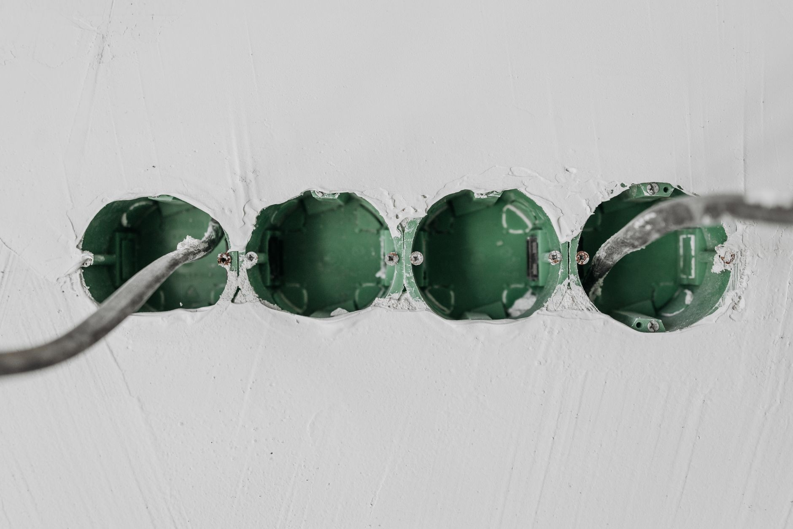
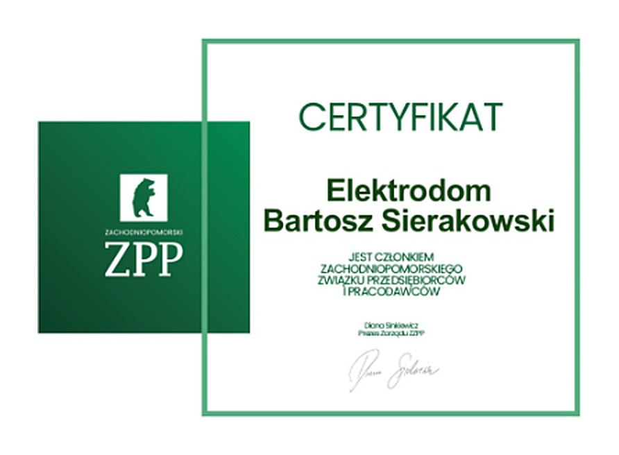

Elektryk
Szczecin
Instalacje elektryczne, awarie, rozdzielnice, oświetlenie LED i pomiary w domach, mieszkaniach i firmach. Cenę znasz przed robotą, a po robocie dostajesz protokół.

- 5,0119 opinii w Google
- 5,0ponad 110 opinii na Fixly
- 24/7telefon i pogotowie
- 2012w Szczecinie od roku
Czym się zajmujemy

Awarie i pogotowie elektryczne
Zgasła połowa mieszkania albo bezpiecznik wybija po włączeniu czajnika? Sprawdzamy obwód po obwodzie i usuwamy przyczynę. Nie podnosimy bezpiecznika „na próbę”.
Szczegóły
Instalacje elektryczne
Budujesz dom albo robisz remont? Rozprowadzamy instalację od tablicy po ostatnie gniazdko: obwody, bruzdy, puszki, a na koniec pomiary z protokołem.
Szczegóły
Rozdzielnice i zabezpieczenia
Dokładamy różnicówki i ochronniki przepięciowe do starszych tablic. Różnicówka odcina prąd, zanim zrobi krzywdę człowiekowi.
SzczegółyOświetlenie i LED
Taśmy LED pod szafkami, wzdłuż schodów i w sufitach, lampy i żyrandole. Zdjęcie obok to basen z naszej realizacji.
Szczegóły
Automatyka i sterowanie
Sterowanie oświetleniem i ogrzewaniem, automatyka bram, układy czasowe i czujniki.
Szczegóły
Pomiary elektryczne i protokoły
Do odbioru domu, do ubezpieczyciela po szkodzie, do wynajmu: wszędzie tam potrzebny jest protokół z pomiarów, nie „działa, sprawdzałem”.
Szczegóły
Monitoring, alarmy i anteny
Kamery CCTV przy domu, firmie i posesji. Systemy alarmowe: czujki, centrala i sygnalizatory.
SzczegółyElektrodom prowadzi Bartosz Sierakowski. Każde zlecenie idzie tak samo: rozmowa, cena, robota, protokół.
Dzwonisz
Krótka rozmowa i wiesz, czy przyjedziemy i kiedy. Przy awarii od razu mówimy, co wyłączyć, żeby do naszego przyjazdu było bezpiecznie.
Znasz cenę
Zanim wyjmiemy narzędzia, wiesz, ile zapłacisz. Wyjdzie coś nowego w ścianie? Najpierw rozmawiamy, potem robimy. Wycena jest bezpłatna.
Protokół i gwarancja
Na koniec mierzymy i pokazujemy wynik. Dostajesz protokół z pomiarów, gwarancję na wykonane prace i jasny rachunek.
Nasze prace


Pogotowie elektryczne 24h
Zgasło? Iskrzy? Bezpiecznik nie daje się włączyć? Odbieramy całą dobę, 7 dni w tygodniu. Opowiedz, co się dzieje, a powiemy, kiedy możemy być i co wyłączyć do naszego przyjazdu.
Opinie i certyfikat

Jest rzetelny, cierpliwy i tłumaczy wszystko w zrozumiały sposób. Z czystym sumieniem polecam Bartosza każdemu, kto potrzebuje solidnego i godnego zaufania elektryka!Ewelina Domagalska · opinia w Google
Pan Bartosz bardzo pomógł nam w poprawie błędów w instalacji elektrycznej oraz przygotował potrzebne protokoły.Anita Krecka · opinia w Google
Jego praca była bez zarzutu, a cały proces przebiegł sprawnie i bezproblemowo.Michał Mireńczuk · opinia w Google
Pan Bartek robił u mnie całą instalację, jestem bardzo zadowolony z usług. Bardzo profesjonalnie, aż pan z Enei podczas okresowego przeglądu był pod wrażeniem. Szczerze polecamJacek · opinia z Fixly
Rewelacyjnie szybki kontakt. Termin na za 1 godzinę. Gniazdka i dodatkowo kinkiet działa. Polecam. Rewelacja. Cena usługi przystępna.Izabela · opinia z Fixly
Pan Bartosz wykonywał u nas podprogową instalację oświetleniową LED oraz system oświetlenia domu z zegarem słonecznym (programatorem). Podłączał również sprzęty AGD oraz montował gniazdka elektryczne. Gorąco polecamPiotr · opinia z Fixly
Pan Bartosz szybko znalazł wolny termin, na czym mi zależało. Dobrze i bezpłatnie doradził mi w sprawie mojej instalacji elektrycznej i jej przyszłej rozbudowy. Sama zaś usługa została wykonana terminowo, szybko i w rozsądnej cenie.Mariusz · opinia z Fixly
Potrzebowałam elektryka z dnia na dzień do podłączenia skrzynki. Pan miał wolny termin, zrobił wszystko sprawnie, dobrze i w atrakcyjnej cenie. Polecam tego fachowca!Olga · opinia z Fixly
Pan Bartosz przyjechał terminowo, sprawdził instalację, skutecznie zdiagnozował i doradził. Sprawnie, sympatycznie, polecam!Jakub · opinia z Fixly
Elektryk Szczecin i okolice
Baza jest w centrum Szczecina, przy ul. Żółkiewskiego. Jeździmy po lewobrzeżnej części i Prawobrzeżu, do Polic, Gryfina, Goleniowa, Stargardu i Pyrzyc.
Nie ma Twojej miejscowości? Zadzwoń i podaj adres. Jak nie dojedziemy, powiemy od razu.Elektryk Szczecin: pytania
Nie ma tu Twojego pytania? Odpowiemy od ręki przez telefon: +48 698 686 608.
Ile kosztuje elektryk w Szczecinie?
Zależy, co się dzieje, dlatego wypytujemy przez telefon i od razu podajemy widełki. Ostateczną cenę ustalamy przy oględzinach, zanim zaczniemy.
Czy wycena jest płatna?
Za obejrzenie i wycenę nie bierzemy pieniędzy. Płacisz za robotę, nie za rozmowę o niej.
Czy macie pogotowie elektryczne 24h?
Tak. Telefon odbieramy całą dobę, 7 dni w tygodniu. Brak prądu w całym domu to pilny wyjazd i przestawiamy grafik.
Dojeżdżacie poza Szczecin?
Tak: Police, Gryfino, Goleniów, Stargard, Pyrzyce i okoliczne miejscowości. Podaj adres przez telefon, a od razu powiemy, czy dojedziemy.
Mam starą instalację w mieszkaniu. Muszę wymieniać wszystko?
Niekoniecznie. Najpierw pomiary, bo to one pokazują, co naprawdę jest groźne. Czasem wystarczy nowa tablica i osobny obwód do kuchni, a reszta może poczekać do remontu.
Czy dostanę fakturę i protokół?
Tak, fakturę na firmę albo osobę prywatną. Protokół dostajesz razem z nią, jeśli robiliśmy pomiary.